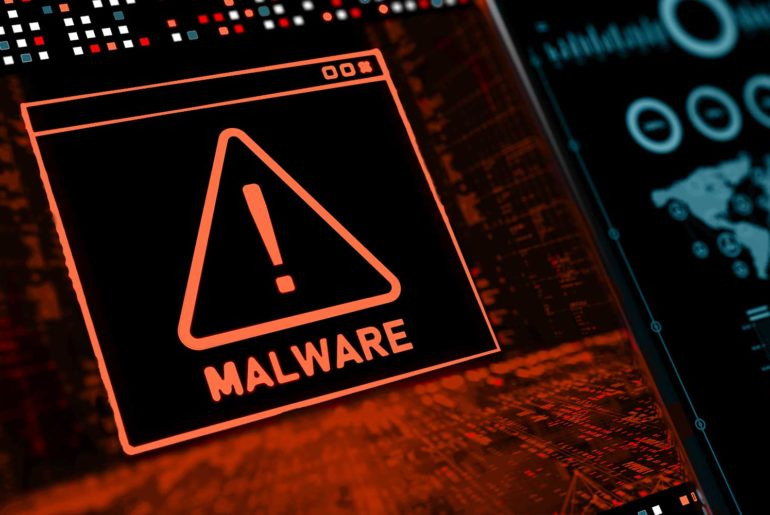

Sécurité en ligne
Durant mon stage chez IMM Informatique, un grand nombre d’intervention concernait des clients ayant des virus sur leur machine, j'ai donc appris à identifier les menaces les plus courantes et à conseiller les clients sur les meilleures pratiques pour sécuriser leur matériel.
Virus courant
Parmi les menaces les plus fréquentes auxquelles les utilisateurs sont confrontés, un des scénarios les plus répandus est l'apparition d'un écran bloqué
avec un message alarmant. Ce message peut indiquer que l'ordinateur est infecté et demander à l'utilisateur de composer un numéro pour obtenir de l'aide.
Souvent, ces messages sont accompagnés d'une voix synthétique qui ajoute de la panique chez l’utilisateur, le mettant dans une position d’urgence.
Si l’utilisateur suit les instructions et appelle le numéro, deux cas peuvent suivre :
- Prise en main à distance : Certains utilisateurs se retrouvent victimes de pirates qui prennent le contrôle de leur ordinateur à distance. Des logiciels peuvent alors être installés contre leur grès sur leur machine et, par exemple, enregistrer tout ce qui écrit sur le clavier, dont des identifiants et codes de connexion…
- Paiement pour une fausse réparation : Dans certains cas, le pirate exige un paiement pour une "réparation" qui se traduit simplement par le fait de désactiver le virus qu’il a lui-même installé. Il pourra alors le réactiver quelque temps plus tard et demander une nouvelle somme pour une nouvelle "réparation" de l’ordinateur infecté.
L’Importance des mises à jour système et logiciel
Une des meilleures défenses contre les virus et autres menaces en ligne est de maintenir son système et ses logiciels à jour. Les mises à jour contiennent souvent
des correctifs de sécurité qui comblent les vulnérabilités exploitées par les pirates. Les systèmes d’exploitation, les navigateurs, les logiciels antivirus,
et même les applications courantes comme les suites bureautiques reçoivent régulièrement des mises à jour qui renforcent leur sécurité.
Malheureusement, beaucoup d’utilisateurs ignorent ou repoussent ces mises à jour, les considérant comme gênantes. Pourtant, négliger ces mises à jour expose
l'ordinateur à des risques importants. Il est donc essentiel de les installer dès qu'elles sont disponibles pour garantir une protection optimale.
Précautions à prendre pour éviter les virus
La prévention est le meilleur moyen de se protéger contre les virus :
- Utiliser un antivirus fiable : Un bon logiciel antivirus est la première ligne de défense contre les menaces en ligne. Il doit être régulièrement mis à jour pour détecter et neutraliser les dernières menaces.
- Éviter les liens et pièces jointes suspects : Les mails ou messages provenant de sources inconnues ou inattendues peuvent contenir des liens ou des pièces jointes infectés. Il est important de ne pas cliquer sur ces éléments avant de s'assurer de leur légitimité.
- Télécharger uniquement depuis des sources officielles : Que ce soit pour un logiciel, une application ou même un fichier, il est important de toujours télécharger depuis des sites officiels ou des sources fiables. Les sites non vérifiés peuvent héberger des logiciels malveillants déguisés.
- Activer les pares-feux : Un pare-feu aide à bloquer les accès non autorisés à l'ordinateur. La plupart des systèmes d’exploitation disposent d’un pare-feu intégré qu’il suffit d’activer et de configurer correctement.